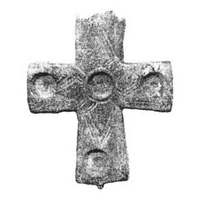
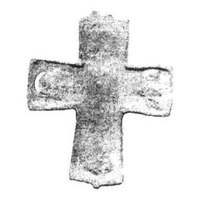

Catalog › CE-0245 · KOR2003-I.2.4
Valvă fragmentară de cruce-encolpion cu capete drepte, cu cuiburi pentru inserții și ornament geometric
sec. X–XI (901–1100) · Vasîliv, regiunea Cernăuți (raionul Zastavna), Ucraina · Centrul Bucovinean de Cercetări Arheologice (BȚAD) de pe lângă Universitatea Națională din Cernăuți „Iuri Fedkovici”, Cernăuți
single valve of a reliquary cross, aramă; c. X–XI (901–1100); found at Vasîliv, regiunea Cernăuți (raionul Zastavna), Ucraina; kept at Centrul Bucovinean de Cercetări Arheologice (BȚAD) de pe lângă Universitatea Națională din Cernăuți „Iuri Fedkovici”, Cernăuți.




Identificare
- Categorie
- Valvă izolată
- Material
- Aramă
- Tehnică
- Turnare în relief; Gravare (incizie)
- Stare
- Fragmentară
- Dimensiuni
- Î 60 × L 52 mm
Datare și atribuire
- Datare
- sec. X–XI (901–1100)
- Centru
- Necunoscut
- Tipologie
- Korzukhina–Peskova 2003, tip I 2
Descoperire
- Localitate
- Vasîliv
- Regiune
- regiunea Cernăuți (raionul Zastavna)
- Țară
- Ucraina
- Context
- Așezare
- Anul
- 1998
Păstrare și referințe
- Colecție
- Centrul Bucovinean de Cercetări Arheologice (BȚAD) de pe lângă Universitatea Națională din Cernăuți „Iuri Fedkovici”, Cernăuți
- Bibliografie
- G. F. Korzukhina, A. A. Peskova, Древнерусские энколпионы. Нагрудные кресты-реликварии XI–XIII вв., Sankt-Petersburg, 2003 [Korzukhina–Peskova 2003], p. 53, cat. nr. I 2/4, reprodusă la Табл. 12 (planșe, p. 254). Bibliografie citată în sursă: Пивоваров 2000, 220, рис. 1; Пивоваров 2001, 66, фото 8, рис. 9.
- Figura
- Табл. 12
- Planșe
- Korzukhina–Peskova 2003, Табл. 12 (planșă fără paginație proprie în PDF; p. 254 tipărită)
- Observații
- Datare după Peskova: sec. X–XI. Circumstanțe: Găsit în 1998 de un elev al școlii locale în locul numit Monastîr, pe teritoriul orașului Vasîliv din cronici. Proveniență în colecție: intrat de la M. V. Semeniuk, directorul muzeului de istorie al satului Vasîliv. Dimensiuni: h 6,0 cm păstrați (fragment). Valvă de cruce-encolpion cu capete drepte, ușor lărgite (sursa nu precizează dacă este valva de față sau de revers). Marginea de sus a crucii este ruptă, în cuibul jumătății drepte a crucii o gaură trecătoare apărută prin coroziune. Pe latura interioară a valvei, bombări care repetă adânciturile exterioare (cuiburile). Pe margini și în centrul valvei 4 cuiburi rotunde (unul nu s-a păstrat), cu diametrul de 0,9 cm, pentru inserții, cu o adâncitură centrală conică în mijlocul fiecărui cuib. În centrul crucii ornament geometric gravat în formă de romb-rozetă și cruce oblică, trasat cu linii triple sau duble pe punctări. Inscripții absente. Coordonate: nu sunt date în sursă.
Citare: Corpus Encolpiorum, CE-0245, Valvă fragmentară de cruce-encolpion cu capete drepte, cu cuiburi pentru inserții și ornament geometric, https://vitaliejosanu1979-ux.github.io/primul-meu-proiect/piese/KOR2003-I.2.4/ (accesat 2026-10-17).